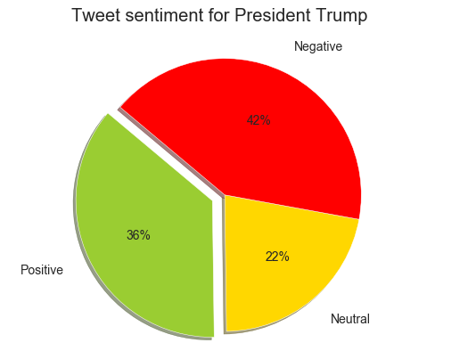

A word cloud (also known as a tag cloud or text cloud) is a visual representation of an unstructured data
in which the words appear bigger the more often they are mentioned.
This chart shows the most relevant keywords from positive and negative tweet data.
What people think about Presidential Candidates?
A word cloud (also known as a tag cloud or text cloud) is a visual representation of an unstructured data
in which the words appear bigger the more often they are mentioned.
This chart shows the most relevant keywords from positive and negative tweet data.
President Donald Trump
Former Vice President Joe Biden

